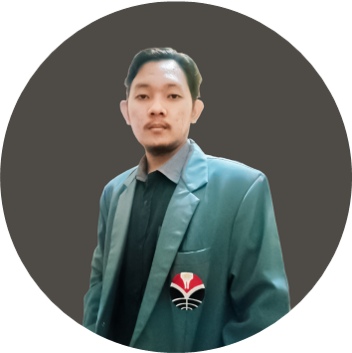

Hi. Selamat datang di PORTOFOLIOKU
Penyedia informasi seputar data portofoliomu.



"Website ini dapat membantu kamu untuk menyimpan portofoliomu secara pribadi maupun publik guna memenuhi kebutuhan aktivitasmu. Berikut contoh yang kami buat!"
Kelahiran Tangerang tepatnya 9 April 2002. Beralamat di Permata Tangerang, Desa Gelam Jaya, Kecamatan Pasarkemis, Kabupaten Tangerang, Provinsi Banten. Mengawali masa pendidikan di SD Negeri Sukaasih 1, lalu SMPN 1 Pasarkemis, dan berlanjut SMAN 24 Kabupaten Tangerang. Kini saya sedang menempuh pendidikan S1 di Universitas Pendidikan Indonesia. Saya merupakan remaja aktif dengan sejumlah hobi di luar ruangan seperti Cycling, Hiking, hingga Traveling. Motivasi saya dalam menjalani hidup adalah prinsip kebermanfaatan untuk masyarakat dan lingkungan.
Lahir di Garut pada tanggal 25 September tahun 2002. Dari jenjang TK sampai SMA saya menuntut ilmu di Pesantren Persatuan Islam atau biasa dikenal dengan PERSIS, dan saat ini saya merupakan mahasiswa Sistem Telekomunikasi di Universitas Pendidikan Indonesia. Saya pernah mengikuti organisasi di kampus yaitu Badan Legislatif di Himpunan Mahasiswa Sistem Telekomunikasi sebagai Staf Sekretaris. Saya juga pernah mengikuti Konferensi Internasional AASEC 2021 sekaligus sebagai presenter dalam forum tersebut. Saya memiliki ketertarikan dalam pixel art, dan game development.
Lahir di Karawang pada tanggal 10 April tahun 2002. TKIT Al-Fikri dan TK An-Nur menjadi sekolah pertama saya kala itu. Setelah lulus, SDIT dan SMPIT Al-Ghifari menjadi pilihan saya untuk melanjutkan ke jenjang berikutnya. Masa remaja awal telah selesai, SMA Negeri 1 Telagasari menjadi pilihan saya untuk mencari pengalaman disekolah negeri yang menjadikan batu loncatan untuk beradaptasi dengan lebih banyak orang yang memiliki karakter yang berbeda-beda. Lewat jalur SNMPTN, Alhamdulillah saya diterima di Universitas Pendidikan Indonesia. Saya memiliki segudang prestasi salah satunya menjuarai ajang perfilman dikanca Nasional. Dukungan orang terdekat menjadi tekat yang bulat untuk meraih hal tersebut.

Lahir di Tegal pada tanggal 20 Juli 2001. Pendidikan pertama saya ditempuh tepatnya di TK Aisyah Bustanul Athfal. Kemudian saya melanjutkan pendidikan sekolah dasar di SD Randugunting 1 Tegal. Setelah lulus saya pindah tempat tinggal serta menetap di Cirebon, dan melanjutkan pendidikan di SMP Negeri 9 Cirebon. SMA Negeri 3 Cirebon menjadi tempat saya menempuh pendidikan menengah atas. Kemudian saya mendaftar dan lulus jalur SBMPTN di Universitas Pendidikan Indonesia dengan Program Studi Sistem Telekomunikasi. Saya memiliki pengalaman dalam berorganisasi di BL HMST sebagai badan legislasi dan Anggota Biasa LEPPIM UPI Kamda Purwakarta. Saya juga pernah diberikan kesempatan menjadi ketua pelaksana kegiatan Sidang HMST 2022. Book Chapter Dampak Pemberlakuan Pembatasan Kegiatan Masyarakat di Masa Pandemi yang berhasil diterbitkan merupakan hasil karya saya serta teman-teman saat mengikuti LEPPIM AWARD 2021. Saya terus berusaha berkembang dengan dukungan doa dan semangat sebagai pemicu meraih kesuksesan.